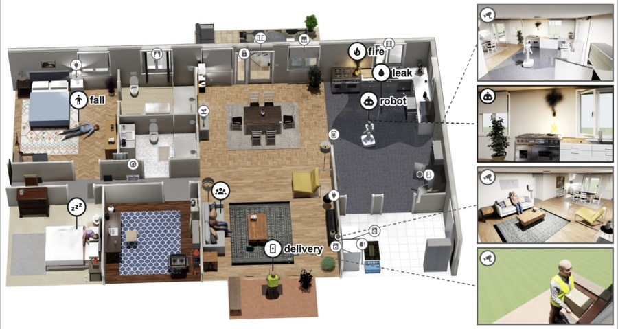
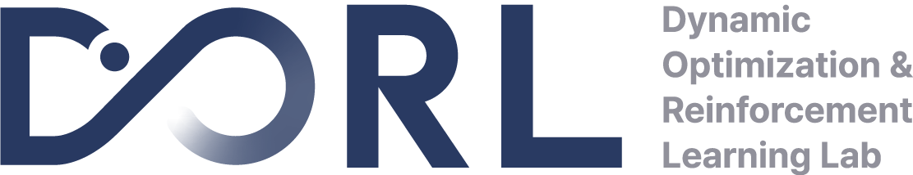
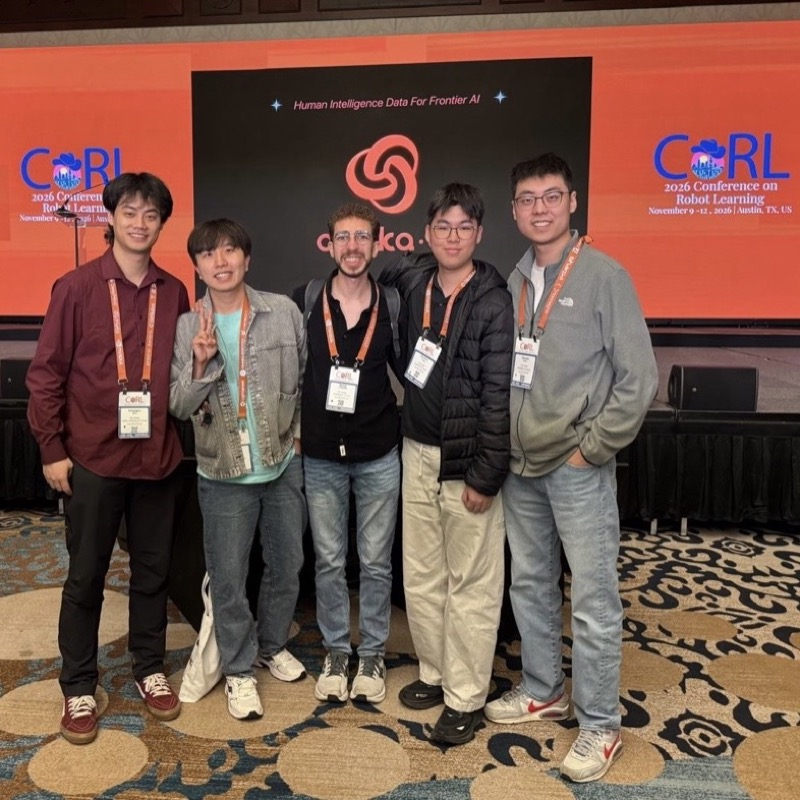
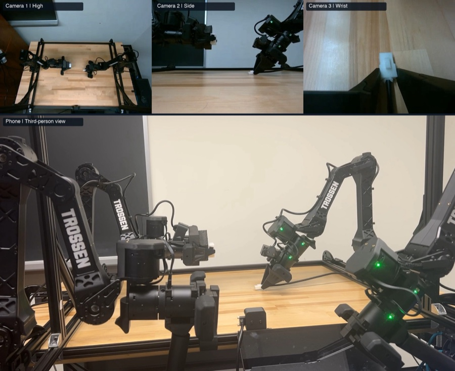
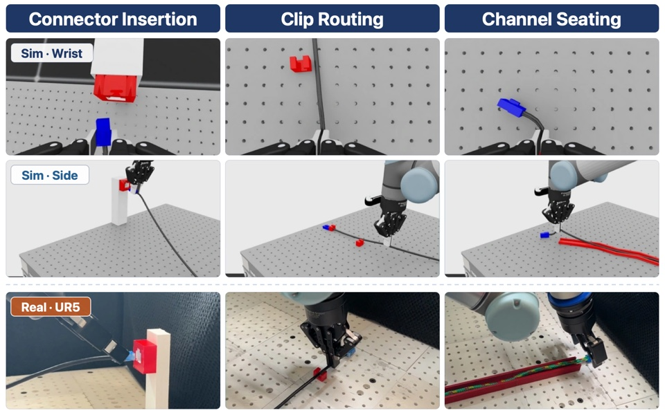

TL;DR An Isaac Sim simulation framework and 20-task benchmark bringing robots, networked IoT devices, house cameras, and simulated residents into a shared home to evaluate VLM agents under evolving hazards and ambiguous alerts.

DORL Robotics Team


TL;DR An Isaac Sim simulation framework and 20-task benchmark bringing robots, networked IoT devices, house cameras, and simulated residents into a shared home to evaluate VLM agents under evolving hazards and ambiguous alerts.

TL;DR Keeps a generalist VLA policy frozen while learning a GRU phase coordinator and lightweight RL specialists online—progressing from human intervention to self-evolving execution across multi-stage manipulation tasks.

TL;DR A configurable Isaac Sim–based simulation framework for wire manipulation covering three core tasks—connector insertion, clip routing, and channel seating—benchmarking RL, IL, and VLA baselines with physical UR5 validation.
Professor, Department of Mechanical & Industrial Engineering, University of Toronto